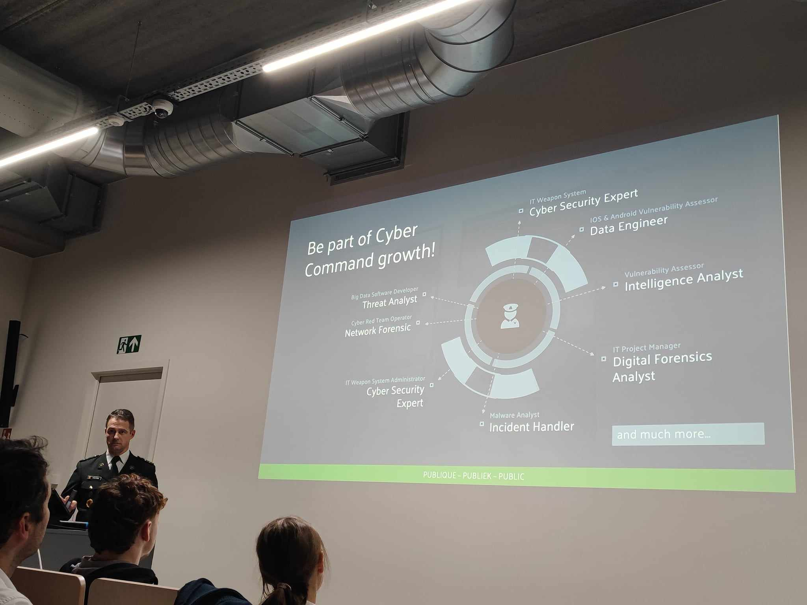
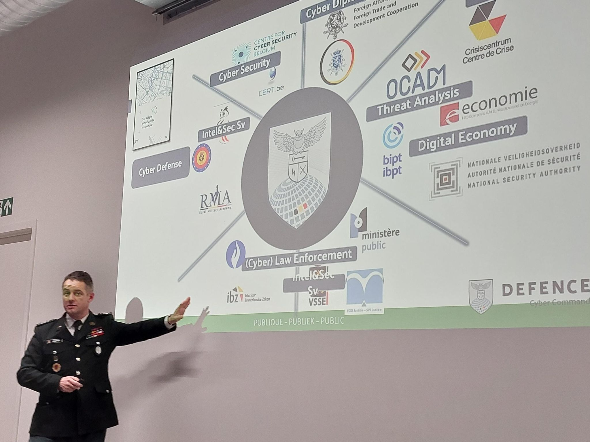

Tech&Meet: Belgian Cyber Command (CyCom)
On November 12, 2024, I attended a Tech&Meet session at Howest University of Applied Sciences featuring Lieutenant Colonel Gunther Godefridis from the Belgian Cyber Command (CyCom).
The presentation covered CyCom’s role in national cybersecurity, including cyber defense, intelligence, and digital threat response.
A notable part was the strict top-secret clearance process. It extends beyond the individual — family history and online presence are part of the vetting.
The recruitment pitch was clear: CyCom is actively looking for skilled professionals, including reservists and full-time cyber personnel.
This event was both informative and engaging. It offered a direct perspective on cybersecurity careers in defense.
 